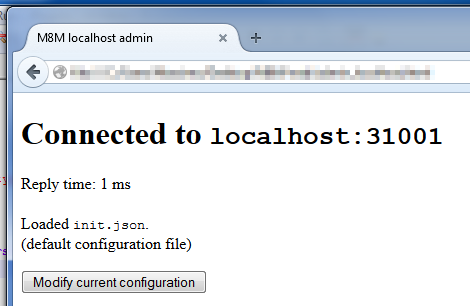

Web configurator
It is very similar to the configuration wizard. In fact, they are the same web app.
The configuration wizard is run if no file can be found. Otherwise, the configurator is run.
The bottom line is: if you can set it by using the wizard, you can probably modify it.
If everything is fine, it will be like this:

Once you hit the button, you'll be presented with a form with various stuff you can change. It is assumed you already run the wizard so you know what you're doing.

Wait! Wouldn't it be better to let me see the values first?
Yes it would but it isn't. Maybe this feature will work in the future.